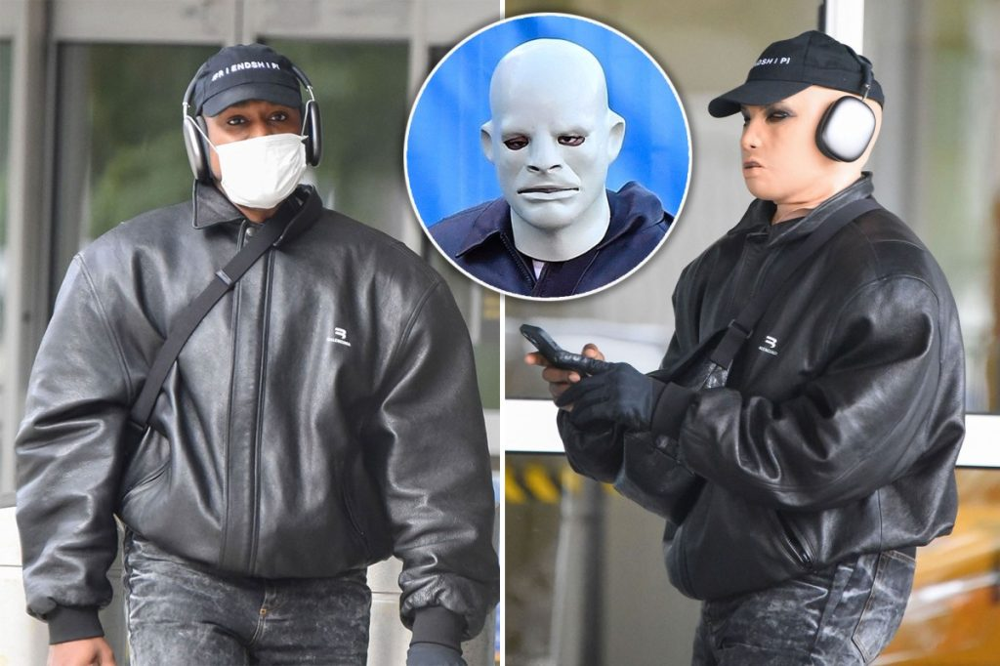

Kanye West foi visto se encontrando com o ex- advogado de Donald Trump, Michael Cohen, no bairro do Upper East Side de Nova York, na terça-feira, usando uma estranha máscara. “Estávamos nos reunindo”, disse Cohen ao Page Six quando questionado sobre o tema da reunião. Ele explicou que a máscara de West foi meramente projetada para escondê-lo de fãs e paparazzi.
“O propósito [da máscara] era para que as pessoas não o reconhecessem… nos primeiros 10 minutos em que nos sentamos, ele foi cercado por pessoas que queriam fotos, e para dizer olá. Então, ele colocou essa máscara para lhe dar algum anonimato, o que, curiosamente, não funcionou de verdade” diz Cohen, após dizer que ouviu isso de Kanye.
O candidato a prefeito de Nova York, Eric Adams, teria planejado comparecer ao encontro também, mas acabou tendo que fazer uma reunião em Midtown. O CEO da 5WPR, Ronn Torossian, disse ao Page Six que a máscara permitiu a West atravessar Nova York sem a necessidade de segurança.
“Kanye estava muito calmo e relaxado, sem segurança. Ele estava usando a máscara na maior parte do tempo e disse que a estava usando para poder andar livremente. Não havia segurança, ele estava apenas vagando pelas ruas com a máscara. Ele era um cara agradável. Ele e Michael Cohen estavam conversando sobre imóveis.”
No passado, muitos questionaram o motivo que estava fazendo o rapper esconder o rosto, criando até mesmo uma teoria. O usuário do Twitter @weareallwater achava que Kanye está escondendo o rosto por causa de um livro escrito por Nathaniel Hawthorne, The Minister’s Black Veil.
O livro apresenta o reverendo Mr. Hooper, que começa a esconder seu rosto com o raciocínio relacionado ao conceito de pecado oculto. A análise do conto sugere que Nathaniel pretendia que o véu fosse uma representação visual do pecado humano. No entanto, Nathaniel nunca explicou realmente o significado por trás da história, então está aberto a interpretações.